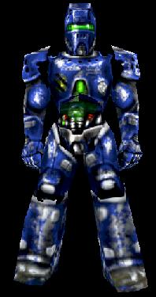

Mod Ideas/WaterFight
Description
This mod is really designed for team games, but could make an interesting DM type game. Rather than run around with big guns, player carry water pistols and have to soak each other to win. All of the water pistols are fed from a single water tank carried on the players back. That way only a single "ammo store" is required. Measured in litres ofcourse  .
.
When full the player's water tank will reduce the speed of the player. As the water is used, the tank becomes lighter and the players move faster. Also, as the player gets "soaked" he will also start to move slower. Once the player is soaked through to the skin then they are out of the game (their weapon stops working) until they can dry themselves out.
Weapons
In order to keep the game very simple there will be very few weapons in the game.
- Pistol – The default weapon. It fires a small amount of water at short range. It can fire very fast, but then it needs to.
- Pump Action Soaker – This weapon fires a short burst of water from short to medium range. Athough the fire rate isn't particularly great, the soakage is extreme.
- Streaming Soaker – As it's name suggests the streaming soaker fires a continuous stream of water able to soak targets at long range. The stream size itself is not particularly large, but accurate use of this weapon can soak someone in seconds.
- Water bombms – These grenades will soak someone instantly if a direct hit is scored. They also cause additional soakage if you get caught in the splash damage.
- Thermal grenade – These intelligent team weapons can be used to dry members of your team out. It creates a sphere of heat that will dry out any team members, as well as losing them up to 20% of their current water load.
Map Components
There are some new map components for this:
- Water Filling Station – This is where players can get their water tanks refilled. There should be a few of these scattered around the map.
- Thermal Vent – When standing on a vent a player will start to dry out. The player will also start to lose water from their water tank (much more slowly than they dry out).
New GameTypes
- Soakmatch – Run around all players for themselves soakage fun.
- Fill the Bucket – Players are split into two teams. Each team is provided a large bucket that the other team tries to fill. The team to fill their opponent's bucket (or has the least amount of water in it) wins the match. Options to include allowing evaporating water should be present.
Scoring
Players are scored based upon the amount of soakage they inflict on other players. The more accurate a player is the more likely they are to get a high score.
Interested Scripters
If you are interested in developing this mod for UT2003 then add your name to the list. Once you start development you should indicate that below (and hopefully include a link to a journal page). Before you start development you should also check this section to see if anyone else has started.
Zxan:(for the water drop textures (courtesy of Paint Shop Pro 7's water droplet picture tube)) 
Discussion
EntropicLqd: Based on an idea I saw a while back. I finally decided to post it here.
Tarquin: Sounds fun. How is "soakedness" going to be displayed? Would drops water from playes be feasible (and would they look ok?) Could players leave a trail of wet footprints?
RegularX: Some must demand bikin clad models - it might as well be me.
Eldhrin: This sounds very interesting. I'd put myself down as interested but I have no time at present. Maybe later.
ZxAnPhOrIaN: hehehe... splash damage!! I will be glad to provide the water drops falling off the players. Also, if you fall into the water, will you get soaked, or will the water backpack fill up?
Icedude: Ever see that episode of Malcom In The Middle where they build that giant slingshot on the roof? Maybe there could be some of those in the maps so you can get x3 range with water balloons? And what about pools of water? Could you fill your water tank in them, while they slowly soak you?